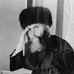

A story describing the cold cruelty of the communist empire and reflec
A story describing the cold cruelty of the communist empire and reflecting on the terrifying odds from which the Rebbe Rayatz was redeemed.

Nobody knew that years before Yisek had been a senior judge in Stalinist Russia. He decided the fate of thousands of citizens who were guilty of crimes against communist law. Among these thousands of individuals were Jews too, and even a few Chassidim. No, he doesn’t remember their names since many years have passed since then, but he does clearly recall their faces and demeanors.
The following story took place four years ago on the 15th of Sivan, the anniversary of the day the Rebbe Rayatz was arrested and taken to the N.K.V.D. building where he endured great suffering as he himself describes in his diaries. On that day, the head of the Kollel, Rabbi Zushe Gross, related the story of the Rebbe’s arrest and liberation. He described the “crimes” of which the Rebbe was accused, and concluded with his release and redemption.
Yisek Faguskin listened to the story and smiled. “Yes,” he said, “I was a senior judge in the communist system.” With that opening line, Rabbi Gross and the other members of the Kollel learned about Yisek’s past for the first time. “I am very familiar with how they operated. It didn’t take much to get called before a judge and punished severely. But if you think that we judges decided people’s fate, you are mistaken. I will relate one story, one of many that I remember, which will demonstrate how ‘justice’ was meted out in Russia.”
* * *
I was a senior judge at the time Stalin was killed in 1953. As you know, Stalin murdered millions of his citizens in order establish his position and to “purify” Russia of the “decadents.”
After his death, Khrushchev rose to power and the decision was made to reexamine the files of tens and hundreds of thousands of citizens who had been judged under Stalin’s rule. Some of these people were freed.
I reviewed many of these files and decided each matter. One day I came across the file of someone who had been sentenced twenty-five years before. The file had been signed by an investigator who had since been promoted and had achieved the rank of general in the Ministry of Justice, the Yustitzia in the Ministry for Internal Affairs.
Who was this person? His name was Vladek, and he was a simple farmer who lived on the banks of Lake Baikel in Siberia, in a small and peaceful village. One day at the end of the 20’s, he and some friends decided to open a fishing business in order to earn an honest livelihood. They invested a lot of money, bought two motorboats, and began fishing in the lake.
The fish they caught were of superior quality because the lake was free of poisons and dangerous chemicals. Within a short span of time, they were extremely successful and established an artel (a cooperative).
The government wasn’t happy with their accomplishment, and one morning three trucks packed with soldiers arrived in the village. The soldiers dispersed among the passersby and attacked them, and then forced them on to the trucks and covered them with tarpaulins.
Vladek was among those who were caught and forced on to the truck and taken to the G.P.U. for investigation. He spent days in a dark, damp cell without being informed why he had been arrested. When he was finally taken to his first interrogation, he was told that he was guilty of spying.
“Who did you spy for?” asked the interrogator gravely.
“I didn’t spy,” answered Vladek innocently.
Vladek was instantly beaten by two soldiers who stood at his side. He underwent many interrogations, but each time Vladek assumed some mistake had been made and so he never admitted anything since he had nothing to confess.
At one of his interrogations, Vladek was warned that he had 24 hours to think over his decision, and if he did not confess to spying he would be beaten to death.
Vladek lay in his cell and didn’t know what to do. He was famished, desperately so. He was also nearly out of his mind with fatigue. In the end he broke and decided to admit to spying, but he didn’t know what to say about which country he had been spying for. Since he was an ignoramus, and barely knew how to read and write, he wasn’t clever enough to invent the information they wanted.
He figured that if he would tell them he spied for Germany, they would ask him what information he gave them, how he obtained it, and they might even ask him to say a few words in German, which he didn’t know. He didn’t know what he would answer to that, and then he would be guilty of both lying and spying!
Vladek wracked his brains and suddenly he reminded himself of a scene from his childhood, when his grandfather took him to hear the priest’s lecture. He remembered that the priest had mentioned “Babylon” and Vladik rejoiced and decided to say he spied for Babylon.
At his next interrogation, Vladek admitted that he had spied. The interrogator’s face lit up. “For which country?” he asked.
“For Babylon,” answered Vladek in his most sincere tone of voice.
The interrogator was thrilled and quickly wrote down the information and had Vladek sign it. Vladek received a bowl full of black kasha for his trouble, a delicacy he hadn’t tasted in weeks. A few days later he was sentenced to 25 years imprisonment, and on the appointed day he and the other prisoners left by train for the labor camp.
Nearly 25 years had passed and Stalin died, and I was given his file. I looked into the matter and was surprised to learn that this man had admitted to spying for a country that existed thousands of years ago.
In order to properly investigate the matter, I found out that the interrogator who had extracted the confession had been promoted to the rank of colonel in the Ministry of Justice in Moscow. I called the department he worked in and asked to speak to him.
In those days there were hardly any phones, and it took hours until the man was located and we were connected. I reminded him of the case which had taken place at the end of the 20’s and he remembered it.
“How could this man have spied for Babylon?” I asked him, without concealing my surprise. “After all, Babylon was a nation of ancient times?”
There was a long moment of silence on the other end, and then he said, “Yes, I remember it well, but what could I do after receiving a direct order from Mayazhov to fill a certain quota of prisoners? In order to fill the quota, we didn’t care who was guilty and why. We took whoever was available and sent them to Siberia in the best cases, and in the worst cases we sent them to the next world.”
Once he admitted to this, I ordered that Vladek be freed and even be given a token compensation. Broken by his years in the labor camp, all Vladek wanted was to return to his village on the banks of Lake Baikel, and to see his friends, his beloved lake and boats. When he arrived back in the village he discovered that nothing was left of the place, and he was the sole survivor of all his friends.
* * *
“This is a story which I was personally involved in,” concluded Yisek, “and when I hear the story of the great Rabbi who was imprisoned, I am amazed. I am astounded about how he was freed when his ‘crimes’ were so serious. He must have been a great tzaddik…”
Menachem Ziegelboim. "A story describing the cold cruelty of the communist empire and reflec." Beis Moshiach, no. 839 (June 29, 2012).